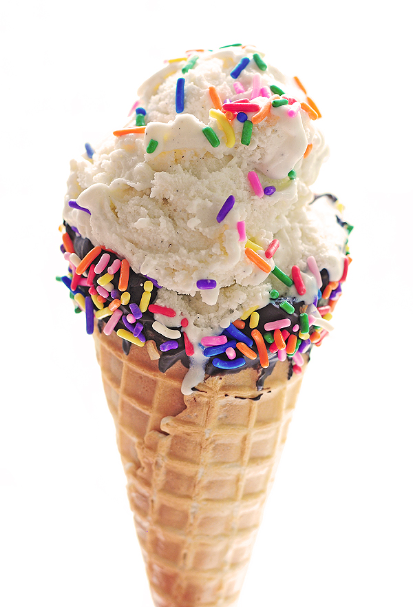
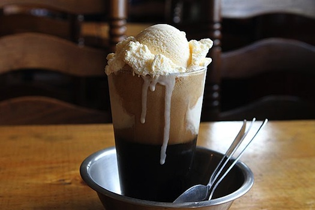
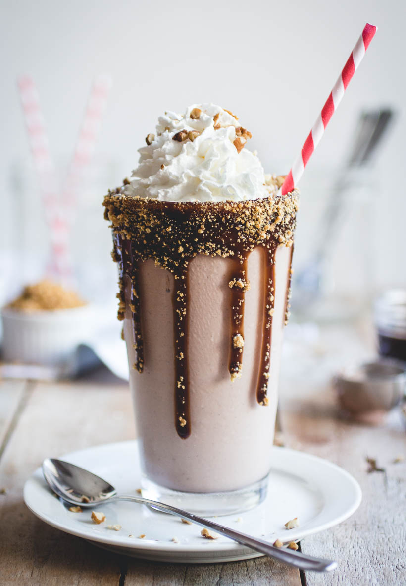
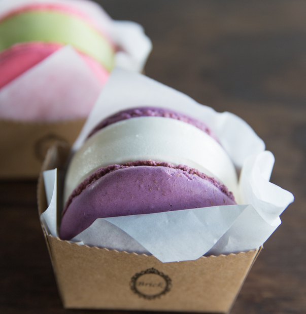

Our ice cream is prepared using fresh, organic milk which we get from our personal company farm, which is located in Schenley Park. We choose to raise our own cattle and milk each cow by hand every morning because we firmly belief in the importance of a high quality product, and for us, the best way to ensure quality is to outosurce as little of the business as possible.
Our ice cream is prepared using fresh milk, cream, and sugar. Some of our recipes contain other additional ingredients such as egg, fruits, candy, and chocolate. We also make homemade waffle cones and waffle bowls which we serve our delicious ice cream in.
Our ice cream shop has a large walk-in freezer where we store the ice cream. The freezer temperature remains the same year round, so no matter when you choose to enjoy it, the texture and flavor of Roc's ice cream will remain pristine.
| Traditional Ice Cream  | Ice Cream Float  |
| Milkshake  | Macaroon Ice Cream Sandwich  |